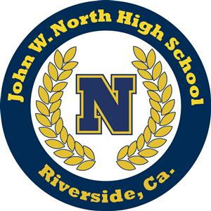
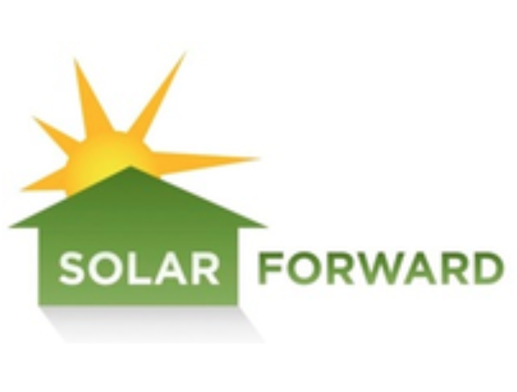
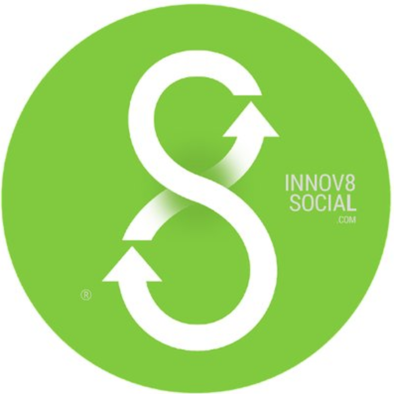
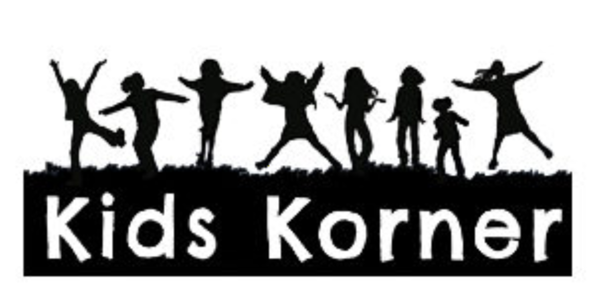
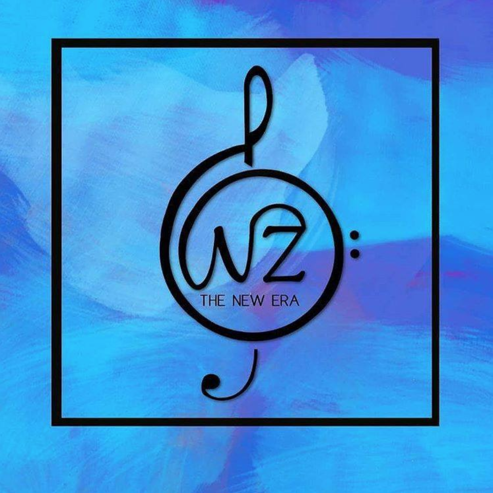
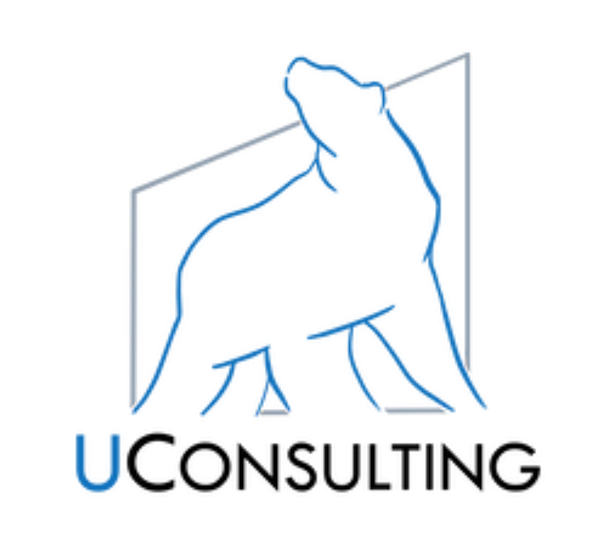

Education
University of California, Los Angeles
Mathematics of Computation, B.S.
September 2016 - June 2020 (expected)

John W. North High School
Riverside, CA
2012-2016
Work Experience
Hansel, LLC
Front-End Software Developer Intern
THE EXPERIENCE
Working at Hansel has proved a completely unique experience for me, and I can honestly say I've learned (and am continuing to learn) a lot. Though this was both my first time working on mobile application development and working at a startup, I found that I appreciate the work flow and style in which Hansel runs. Though at first, it felt really fast-paced, I grew to appreciate the fact that I always had something to do. I also found that the people I worked with were really encouraging, and helped me grow as a developer by being patient and allowing me to ask all kinds of questions. I couldn't be more grateful for the experience.
Link to Hansel's Website
July 2018 - Present
CollegeVine
SAT Tutor
THE EXPERIENCE
CollegeVine was a great place to work, as it really met me at the intersection of scheduling flexibility and work that makes a difference. My boss made onboarding really smooth and constantly communicated with me, my clients were super eager to learn, and I got to do something I love- teaching.
Link to CollegeVine's Website
June 2018 - Present
Mathematics Undergraduate Research
Student Researcher
THE EXPERIENCE
I had the privilege of working with Professor Newman one-on-one, conducting research with him for 10 weeks. He taught me a lot about how to analyze and draw conclusions from data, as well as how to properly structure research reports.
January 2018 - April 2018

Solar Forward Electric
Marketing and Business Development Intern
THE EXPERIENCE
Solar Forward was my first internship and I wouldn't have it any other way. My boss and co-workers were friendly and encouraging, and I really appreciated the workspace and the company culture. The cherry on top was the fact that Solar Forward was trying to save the planet, one solar panel at a time.
Link to Solar Forward's Website
June 2017 - August 2017

Innov8Social
Impactathon Teen Intern
THE EXPERIENCE
Working at Innov8Social taught me a lot about the impact space and social entrepreneurship. I got to meet some of the most inspiring leaders in today's social impact sphere, and, in the process, learned a bit about what it takes to start a new project altogether. I worked one-on-one with Innov8Social's founder and leader, and am so grateful for the perspective it gave me on using business for good.
Link to Innov8Social's Website
June 2017 - August 2017
Extracurriculars

Kids Korner
Finance Director
THE EXPERIENCE
At Kids Korner, I had the opportunity to mentor and teach kids from the ages 4-14, and really enjoyed spending time with them. They were always super energetic and full of spirit, and nothing beats the feeling I got when I was able to teach them something new.
Link to Kids Korner's Website
September 2016 - June 2018

Naya Zamaana
Finance Director
THE EXPERIENCE
Naya Zamaana has been my home away from home for the past two years, as it's given me a family with whom I can continue my passion for music. The team has taught me a lot about teamwork and working towards creating something bigger than yourself.
Link to Naya Zamaana's Website
September 2016 - Present

UConsulting
Junior Consultant
THE EXPERIENCE
I joined UConsulting at the end of my sophomore year at UCLA, and was pleasantly surprised at how fast and how much it taught me about consulting. I, along with my peers, completed the accelerator and am looking forward to doing more with them in the future!
Link to UConsulting's Website
April 2018 - Present
Programming Languages
C++ Swift/iOS HTML/CSS R
Python
© 2018 Saachi Kudtarkar